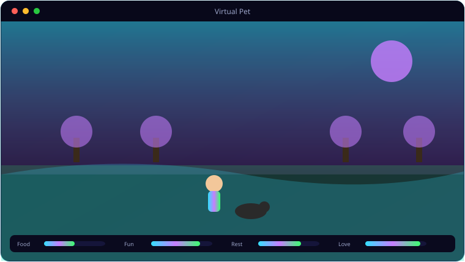

A look inside Virtual Pet.

Everything Virtual Pet brings to the table.
Four Pets, Four Worlds
A fish in an aquarium, a dog in a yard, a cat in a living room, a dragon in a cave — each its own 3D environment.
Real Interactions
Feed the fish, throw a ball for the dog, tease the cat with a laser dot, make the dragon breathe fire.
Stats & Day/Night
Each pet has decaying stats and lives under a day/night cycle with per-scene fog and lighting.
Transparent Desktop Mode
A 2D mode renders the pet directly on your desktop with click-through, so it wanders over your work.
Cinematic Screensaver
In screensaver mode a slow camera pans the 3D scene; install it as a .scr to use system-wide.
Procedural Sound
Sounds are generated in numpy — no audio assets to ship.
System requirements.
Minimum
- OS: Windows 10 (64-bit) or Windows 11
- CPU: Quad-core, 3.0 GHz
- Memory: 8 GB RAM
- Graphics: Dedicated GPU, 2 GB VRAM (OpenGL 3.3 / DX11)
- Storage: 2 GB+ for the game and assets
- Display: 1280×720 or higher
Recommended
- OS: Windows 11 (64-bit)
- CPU: 6–8 core, 3.5 GHz or better
- Memory: 16 GB RAM
- Graphics: GTX 1660 / RX 580 or better, 6 GB+ VRAM
- Storage: NVMe SSD with several GB free
- Display: 1920×1080, 60 Hz+
The 3D screensaver uses the Ursina/Panda3D engine and likes a GPU; the 2D transparent desktop pet is far lighter.
The details.
| 3D mode | Ursina (Panda3D) — lighting, shadows, fog |
| 2D desktop pet | Pygame + transparent layered window (click-through) |
| Pets | Fish · Dog · Cat · Dragon |
| Install | python main.py /s, or install.bat for a .scr |
| Platform | Windows 10 / 11 |
Get Virtual Pet.
A 3D desktop pet and screensaver — fish, dog, cat or dragon.
⬇ Download Virtual PetVirtualPet_Setup.exe · free · Windows 10/11